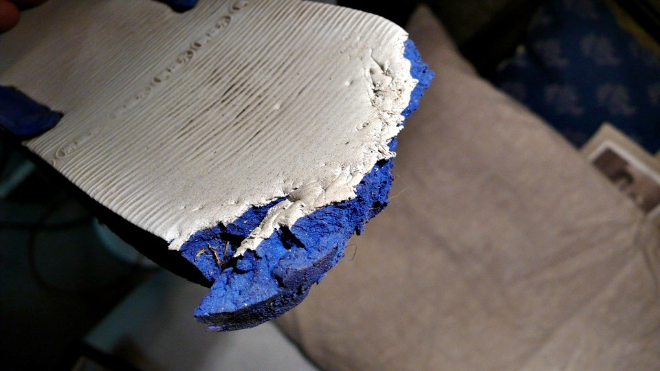

By the time I moved everything up to the second floor and placed everything for the night,
I found there is a window that leads to the street,and the window doesn’t have any glass on it.
This means if there is someone that comes in here in the middle of the night, they can easily get into this house.
For safety reason, I purposely found some wood sticks and blocks off the window.
So if someone comes in they will hit those wood sticks, and wakes me up from my sleep.
The safety procedure is just in case, good thing the whole night was fine, slept until morning.
Outside ground is a bit wet; maybe there is some rain last night.
By the time the sun came up today, it had stopped raining, and seems like the weather today is much better than the last few days.
Since I can get out from the second floor, there is no need to move the bike to the downstairs area.
I can get out from the 2nd floor window; just one trip takes care of it all.
When I left this empty house, walking to the quiet neighborhood, it was still very quiet around 7:30am,
very few pedestrians and cars on the road.
The first thing I did wasn’t tried to ride more, but go back to the grocery store from last night.
There is a free electric plug next to the cart area; I need to finish writing the travel journal today before I leave.
After getting into different countries, the places I write travel journals change as well,
from the hotel bed to the tables at the restaurant,
and now I am sitting on the ground in front of a grocery store typing away.
I still have half load of bread and half package of cookies left from yesterday,
I am eating those things for breakfast while I write the travel journal.
The more I eat, the thirstier I get, but I don’t have any water I can drink.
The water in the water bottle tastes funny; so I can only use it to wipe my face,
I don’t want to drink this water regardless how thirsty I am.
Since it is the grocery store next door, then I can buy some beverages, it has been awhile since I spent money to buy beverages.
After comparing prices for a while, I found regardless which country,
they all have similar things to Coca Cola, and the prices are cheap as well.
This is the same in Germany, 1.5L (6.3 cups) of soda just $0.39 Euro ($0.60USD),
so even if in China money (RMB), this is still very cheap.
I picked out a bottle each of cola and orange soda, I calculated two bottles being $0.78Euro ($1.17USD),
but when I checked out the cashier charged me $1.28Euro ($1.92USD).
Very confusingly I paid for the sodas, and then looking at the receipt to see why they charge me $0.50Euro more ($0.75USD).
And really, the store does show each bottle is $0.39 Euro,
but every bottle I bought on the receipt it shows a fee for “EW-PFAND 1-ER” which costs $0.25Euro.
I didn’t buy this item, so why is this item on the receipt?
This is not possible for shopping bag charge either because I didn’t get a shopping bag.
The more I thought the weirder it gets, the only ting I can think of is purchasing single bottle is more expensive.
I explained to myself that at the store each bottle is $0.39Euro, and the bottle is in a pack of four,
so it is ok to buy just one bottle, except when you buy just one bottle it is $0.25 Euro more.
This sounds like some random excuse, like I just got fooled, then I wasted all that time comparing prices inside,
for $0.39Euro plus the $0.25Euro fee, this is not cheaper than any other soda.
(Note: the $0.25Euro is for bottle deposit fee, or commonly called recycle fee).
Looking at this receipt for a while, twisting open the soda cap, drinking the cola and eating my toast for breakfast.
I am just 1/3 done with the travel blog, there are lots more to write.
Sitting in front of the store to write the travel blog, it is getting toward noon,
and there are more people coming to shop, but no one is taking an interest to me.
As long as the store workers don’t kick me away, I don’t mind anyone watching me.
In the early morning the sun came out, I got warm in the sun, I regret why I didn’t try to ride then,
and spend this time to write the travel blogs.
I didn’t leave until 11am in the morning, so if I am trying to ride more lately,
then I will wait to write the travel blogs when I get to Paris, I am putting my traveling first.
By the time I left, the sun has disappeared again, the sky has turned dark, and very foggy inside the mountain, I am not sure if it is raining or foggy.
After leaving the store for 5km, I saw a gas station.
Out of habit I will ride around the gas station for a bit, but the bathroom here cost money, so I can’t get water to drink.
Although the bathroom cost money, but the gas station provides free Internet connection, I found another place to get online.
Through the window I see there is electric plug-in inside but no plug-in outside.
Since I don’t have electricity backup, I quickly updated my travel blogs online.
Good thing there is no plug-in and Internet, otherwise I wouldn’t ride at all today.
I already spent this morning sitting in front of the store writing travel blogs,
and I would likely to spend the whole afternoon here at the gas station getting on the Internet.
When I left the gas station the weather didn’t change much, after riding into the mountain,
I found those white clouds, it is a mix of fog and freezing rainwater.
The weather is a bit strange, normally for September, Germany should be warm, no reason to be so cold right now.
When I purchased soda this morning I was only thinking of comparing prices, I didn’t consider any health information.
Looking at the cow eating grass, I thought I should have bought some milk to drink for health reasons.
When I saw bike only path, it would be good to ride on them even though the normal road doesn’t prohibit bikes,
but it feels better to ride on bike only road.
There are few special things about the bikes only road in Germany:
First, you can see bikes only path anywhere, regardless whether in cities or country side,
the rights of the cyclist is regarded special in Germany.
Second, they are beautiful; the people who plan bike paths are genius,
not only are the bike path follows the normal road, and are flat, but the views are also beautiful.
Third, very ridiculous, a lot of time when I ride half way the bike path will disappear,
and end up in the field. At first I think it is funny, then I got used to it.
Because the bike path are unique and special, sometimes I am not sure if I am lost or if I am touring the fields.
In situations like this, I need to see if there are signs that say whether this is a bike lane.
As long as there is a bike lane sign, then it means the road was designed like this,
the betters ones will even show distance to the next place and where it is going.
I didn’t start riding until around noon today, so I wasn’t sure how far I could ride today.
But I just hope I can ride as much as I can today, I shouldn’t have taking lots of nice riding time to write the travel journals.
When I entered this town I was a bit in shock, all the streets have X marks over them.
What is it then? Is the street ahead completely gone?
My goal today is Wurzburg; it is also one of the places that got an X mark over it.
Since the street marker say I can’t get there, then I will just enter this city and trying to find other paths I can take.
The stone paved road is very pretty and elegant, although it isn’t made for bicycle to ride over.
If riding on the pedestrian path on the side, then I need to be careful not running into store signs or displays.
After crossing through this town I found the correct road, and the sky is clearing up as well.
Looking at the dark clouds disappearing is a great feeling.
Even though all the temperatures are around 10C, but under the cloudy sky I feel colder.
Once seeing the bright blue sky then I feel the weather is no longer cold, but cool.
I saw lots of signs along the road; it is difficult to understand the meaning.
Does the number represent speed limit? Then what does the tank in the sign means?
Some stone carving on the bridge, in Europe you can see art pieces anywhere.
Comparing to Poland, going toward southwest in Germany,
most of the places are farm fields, and the towns I meet are smaller in size, I have only gotten lost in one major city in Germany.
I finished al my food in the morning, right now I only have 2 small packages of candy in my bag,
I ate everything I can possibly eat this morning.
Around 3pm, my stomach grumbled, it is no help eating candy,
so I better going to the grocery store to buy some food with substance.
It is very easy to find grocery stores in Germany, almost as easy to find as gas stations.
Although there is a very weird rule, you cannot take pictures in the grocery store.
Just because I took the above photo, there were 3 store clerks following me around until I left the store.
I purchased 2 loafs of toast here. Right now I am hungry enough to finish a loaf of bread without any butter or jam,
slice after slice, until I am not hungry anymore.
There are few places I stops by now, such as the grocery store where I buy my food, and McDonald where I get water.
Finally there are the gas station, where I can usually find wireless Internet, and high likely chance to find electric plug-ins,
and my very new discovery, the air pump machine. With the air pump machine,
I can now easily keep the tire in the fullest possible, this way it is easier to ride.
It is very easy to use, put the piece in, and press on the “+” button, and look at the air pressure machine,
and wait until the tire pressure reaches 60.
While pumping air into the tire I can also charge batteries, resting here, no need to get gas just get air.
Other than not going into restaurants and hotels, there is also another change.
The clothing I am wearing go from light to thicker ones,
if I feel hot then I take the clothing off and put it on the bike, there is another sleeveless shirt inside.
Around 5pm in the afternoon, I will take off the shoes and socks, and ride with the slippers.
This way I will allow the feet to air out for 3 hours,
so when I sleep in the nighttime I won’t sleep with stinky feet inside the tent.
The shoes I took off I tie it on the bag in front of the bike.
If I tie the shoes on the back of the bike, then there is possibility the shoes will get lost while riding somewhere.
Today is a very simple day, at least until now.
I didn’t leave until around noon, still living in Germany’s time zone, not much change.
Having a simple day is a good thing too, as long as there is no accident happening.
Having a great weather like this riding in such beautiful country is a pleasure.
Soon the sun will go down again, there is some problem though.
One thing is there is nothing to report for the travel journal, another is I didn’t ride very far today, just barely passed the 100km (62 miles) mark.
This way I will need to hurry up if I want to reach Paris by September 12 at noon,
unless the rest of the road are all flat and easy to ride.
Also, it would help if I stop getting lost, and don’t spend so much day light time writing the travel journals.
After eating the toast for a whole day combined with weird soda, I feel I don’t have enough calories.
I feel like I don’t have enough energy riding the bike, and before the store closed I went in to purchase 5 packs of chocolates.
The stores in Germany closes around 8pm every night, I have not seen a 24-hour store yet.
After purchasing this pack of chocolate, I broke the amount I set up that I can spend today.
I will pretend I borrow money from tomorrow, since there is still a loaf of bread here,
and chocolates will add calories fast, it is a very important snack for riding the bike.
After purchasing the chocolate, there are still 30 minutes left for me to ride the bike,
just 30km (19miles) less than my goal today, but I probably won’t reach it today.
On the right side of the road is railroad track, and on the right of the track is a big river.
On the right of the river is bike only lane, but I don’t know how to get there.
During the day when I ride the bike, the car drivers will pass around me.
After the sun goes down, I will turn on the red flashlight, and turn on the bike headlights as well.
I don’t know why, but after the sun goes down, the drivers like to honk their horn.
I know they are honking at me, are they warning me? Or telling me not to ride on the streets in the dark?
I do not feel good getting honked all the time, especially during the day I am respected.
So I turn to Side Street, while there is some light out it is time to find a place to rest for tonight.
Looking at how I have camped the last few days, bus stop, empty house, bus stop again, followed by empty house again,
then I should find a bus stop to sleep for tonight.
After turning into this small town I started looking for bus stops, but I only found bus stop markings, there is no “rest place”.
However, it will not be good choice going back to the street to ride further.
Right when I was wondering what to do, I saw a guy running on this cold evening.
He stopped in front of me and breathed a big sigh.
At first he started talking to me in German, then found I couldn’t understand so he talked to me in English.
This is surprising since his English is great. In European countries, only the young ones have excellent English.
The older ones know several languages, but do not speak English.
I told him I am traveling through on my bike, trying to find a place to rest tonight.
Is there some type of park or bus stop around here?
He suggested a learning/activity center in this town, they provide housing, and it is cheap as well.
He said he can ask for me, and maybe I can go there for free.
FREE? I wasn’t expecting much, but the guy told me to follow him.
He was running ahead I followed behind with the bike.
But I was still eyeing for another place to sleep tonight.
It took about 10 minutes to get there, and since he knows English we were able to chitchat.
I found out when he was younger he worked in an American military base.
He also played lots of ping-pong with the soldiers, so his speaks English well.
We kept talking but we forgot to tell each other our own names.
Peter, that is what he said his name is, not only is his English well, but his name is also very English.
Every time when someone asks me how many days I have been traveling?
I answer 130+ days, the other person will show this unbelievable look;
really, I can’t believe I have been traveling so long either.
Running to the end of the street, it was a completely dark house, Peter looked at the sign outside saying the place is closed,
so there was no chance to ask if I can possibly get free lodging.
So I asked the same question again, is there any place to camp?
As long as I won’t get kicked out in the middle of the night.
Peter say, follow him, he has a garage for me to sleep in.
Peter runs about 10km every night, because he needed to take me to the learning/activity center, so he runs extra today.
Peter seems really tired by now. Turns out we passed by his home earlier, but he didn’t stop.
He still took me to the learning center, and now just came back.
Peter went up to get the key, I waited by the garage downstairs,
it has gone completely dark already, and the temperature keeps dropping.
When I was chatting with Peter earlier he said the temperature has been weird.
Usually around this time of the year the temperature is still warm, but not sure what happened this year,
some places has already started snowing, and it was only September!
This is Peter’s home. It is great to live in Europe; you can purchase individual houses,
no need to live with strangers in the same building complex like a bird in a cage.
Three minutes later Peter came back and opened up the garage door, it is wonderful being able to sleep indoor tonight.
This breaks the empty house and bus stop cycle.
In order for me to sleep comfortably, Peter even moved the car out, making a bigger space for me to sleep.
Even though I kept saying, no need to trouble you, this is fine already.
But Peter insisted the car wouldn’t complain spending the night outside is cold, so no need to be nice.
After taking the bike in, I unloaded luggage and opened up the tent.
I told Peter I would leave first thing tomorrow; I will not trouble him.
But Peter did not think I am any trouble, after I put the bike into the garage,
he asked me if I want anything to eat, how about some red wine?
I opened up the plastic bag on the bike handle, took out an unopened bag of toast, I said I would eat this today,
I am grateful I can sleep in the garage tonight.
Peter looking at the toast and said leave this for tomorrow, and follow him upstairs for some warm food to eat.
No need to trouble I said.
No trouble from Peter.
Living with Peter is his wife, Ulrike, even with me the complete stranger, both welcome my visit.
Sitting on the kitchen chair, Peter poured out a glass of red wine for me,
French wine, it is nice able to drink some wine to warm myself up in a cold night like this.
Ulrike used the oven to bake a pizza, and then took out a map.
Looking at this satellite map without country line, no place names, and no street, I found I have rode very far.
Pointing to Taiwan, I said I live here, and then point to Beijing, I said I started here.
Then crossing Europe, I am almost at Paris.
Taking out the camera, playing the photos inside, I said I am lucky the tourist let me look at their map,
and letting me taking a picture of the map for reference, so I can ride all the way to here.
Then Peter took out a more detailed map of Germany, and then I started to study the route and taking picture.
It is very precious able to see a real map made with paper.
After taking so many pictures, Peter said no trouble; he will give me this map.
I can take this all the way to Paris and be fine.
Just like this I received a real map, detailed and free, the kind that is like a book,
not the kind you have to open up a big piece of paper, very easy to turn and not likely to torn.
After the pizza is done baking, it wasn’t placed on the kitchen table, but to the dining room table.
I already feel blessed having a warm pizza to eat, but the dining room table has even more stuff.
The whole pizza for me, and mozzarella cheese with tomato drizzled in extra virgin olive oil and basil;
I think this dish tastes great every time I eat it.
And another type of cheese, with the addition of spices and minced onion, very delicious.
There are three types of cheese on the table, all are produce of France.
And there is preserved radish, with the addition of hot spices from Turkey. The combination is great.

Glass after glass of red wine, sitting with Peter and Ulrike enjoying the wonderful meal.
Fate is an interesting thing, meeting Peter during his run,
and then invited to his house for a full dinner, it is all beyond expectation.
And 30 minutes ago I was still searching for a bus stop to sleep in the dark.
When I was eating I found I was missing one slipper. Peter has a cat and a dog in the house.
The dog likes to chew up stuff, the dog has already chewed up half dozen worth of shoes.
Regardless how many chew toys or bones they purchase, the dog just likes to chew shoes, maybe because of smell.
In just one moment, the dog almost chewed the blue and white slipper up.

After eating, Peter said he has something for me. Then he took a foldable lounge chair going downstairs with me to the garage.

Peter said the floor is too cold; it will be more comfortable sleeping on the lounge chair.
I am so touched, and then I do not need to sleep on the hard and cold ground surface.
There is light in the garage, and electric plug in as well, and then I can finish the travel journal before I sleep tonight.
Then tomorrow I have the whole day to ride the bike; hopefully I can ride up to 200km (124 miles).
After pulling out the sleeping bag and ready to wrap myself in there to wrap the travel journal,
Peter asked me another thing, do you want to take a shower?
Shower?
The last time for a shower was over a week ago.
And this week I have not even wiped myself with a towel because the weather is too cold,
I wouldn’t be able to take it wiping myself with a cold towel.
I wanted to say yes, but I felt I would trouble them.
Just when I was saying no need to trouble, Peter said, no trouble.
Then I took a towel, toothbrush, and toothpaste upstairs, thinking I will be happy able to wash myself with hot water.
Peter said he hope I can take a bath, this way is easier for him.
By just listening to him, I know he wanted me to take a relaxing bath,
but I know if I said no need to trouble just a shower will be fine, so I can’t decline once he said a bath is easier for him.
Regardless how you think I know a bath is not easier than a shower, but Peter’s excuse is adorable and sweet.
When I took the towel and the toothbrush to the bathroom, the tub was already filled with hot bubbly water.
After a nice meal it is the priceless hot bubble bath.
I happily cleaned myself, and I had thought I wouldn’t have a chance to bath until I get to Paris.
I can’t believe this happened early.
After cleaning up, I said good night to Peter and Ulrike whom were sitting in the living room watching TV,
I was ready to go downstairs to the garage to sleep.
Then Peter rose up and said if I can sleep in a bedroom tonight, not he garage, it would not trouble him as much.
This, me, I can’t even find an excuse to say no.
Peter brought up the lounge chair from the garage upstairs,
and I followed behind him with my sleeping bag and the laptop.
The first room is a painting room, and there are even heater provided for warmth.
Outside in the dark is about 5 degrees Celsius (41F), but it is very warm in the bedroom.
I couldn’t believe my luck, someone nice brought me home, I got a map, ate a nice meal,
had a warm bath, and now sleeping in a warm house.
Before I going to bed, Peter made a big pot of coffee; he is putting inside a thermo so I can take it with me for tomorrow.
Since the coffee is hot right now, I drunk a big cup to kick away the sleepy bug.
But I need to finish the travel blog before going to bed tonight.
Since I have been going to bed around 9pm the last few days, I do not have any power to stay up and fight off the sleepiness.
When I was drinking the coffee, I found a white envelope on the table.
For Deray,
to be opened in Paris.
Even though I am very curious what is inside, but I will wait until I get to Paris before I open it.
Peter, I caused you so much trouble, but you don’t think any of this is trouble,
today is to be remembered, and this is because I met a great German.